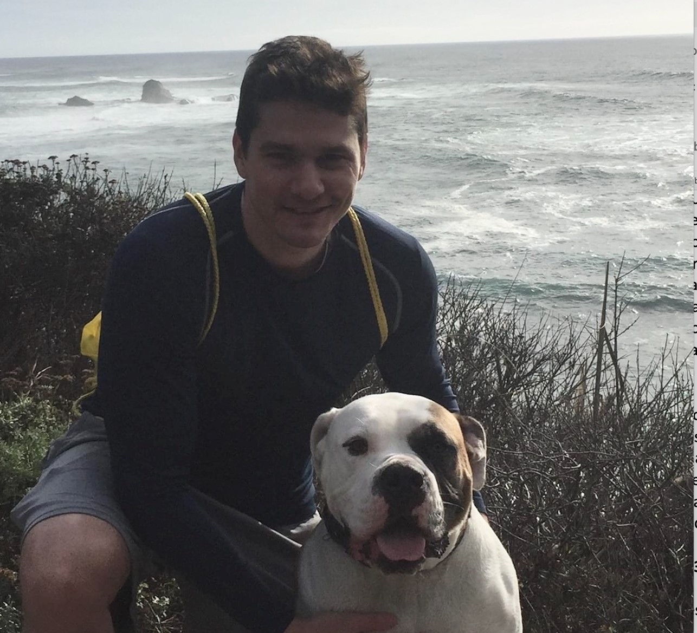

About the Authors
Casey Davis

Casey received a Bachelor’s degree in Mathematics and then a Master’s in Applied Economics from UNC Greensboro. He decided to further his education by pursuing a PhD in Statistics from Ohio State University where he focused on Bayesian methods. He has spent his professional life working in the PK/PD world at Merck, Amgen, and Gilead spending a lot of time learning pharmacology and drug development while researching and advancing new tools and methods, particularly of the Bayesian variety, for implementation in the pharmacometrics space. He likes to play soccer, work out, go on random excursions with his dog, and go to punk, hardcore, and hip-hop shows. When he puts his shoes and socks on, he goes sock, sock, shoe, shoe.”
Yasong Lu
Yasong was trained as a quantitative toxicologist with specialty in PBPK/PD modeling at Colorado State University. After his PhD training, Yasong worked in the pharmaceutical industry as a PK/PD modeler or pharmacometrician supporting drug discovery (at Pfizer) and development programs (at BMS, Novartis, and currently Daiichi Sankyo). He started learning Bayesian analysis and applying the technique to PopPK and PK/PD analysis from about 10 years ago. Currently he’s learning Stan and trying to apply it to his work.
Arya Pourzanjani
Arya Pourzanjani is a senior scientist in the Clinical Pharmacology Modeling and Simulation (CPMS) department at Amgen. He specializes in pharmacometrics, data science, machine learning, and Bayesian applications to these areas.
Pavan Vaddady
Pavan Vaddady currently serves as the Head of Advanced Pharmacometrics within the Quantitative Clinical Pharmacology Department at Daiichi Sankyo, Inc. During his career, he led several early and late-stage development programs across multiple therapeutic areas both as a clinical pharmacologist and a pharmacometrician and applied model informed approaches to impact key drug development decisions. His current role involves developing a team of scientists for advanced pharmacometrics aspects including complex pharmacometrics modeling and simulation, disease progression, AI/ML, Bayesian approaches, MBMA across a portfolio of compounds. He is passionate about teaching and mentoring colleagues and has delivered comprehensive courses and tutorials on NONMEM, R, Stan, and Shiny for pharmacometricians. He obtained his B. Pharm. (Hons.), and M. Pharm. from BITS Pilani, India and his Ph.D. in pharmaceutical sciences from the University of Tennessee Health Science Center, Memphis, USA.